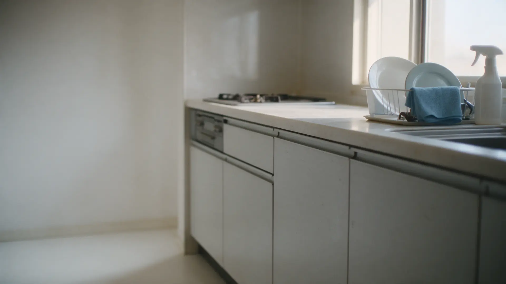
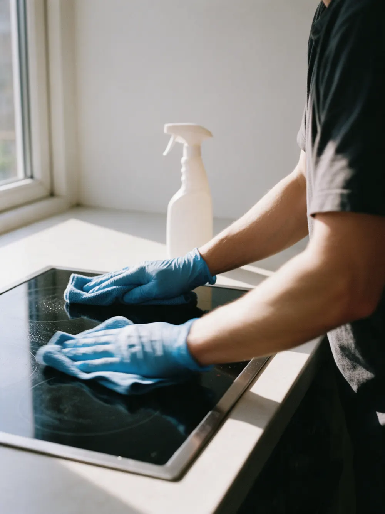
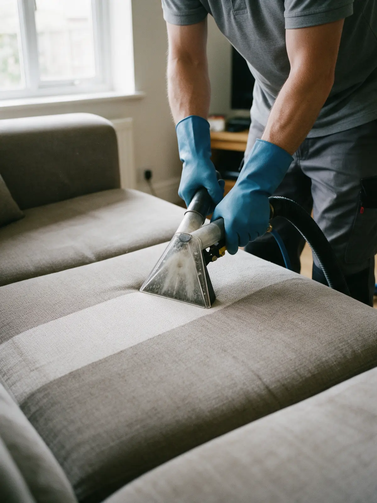
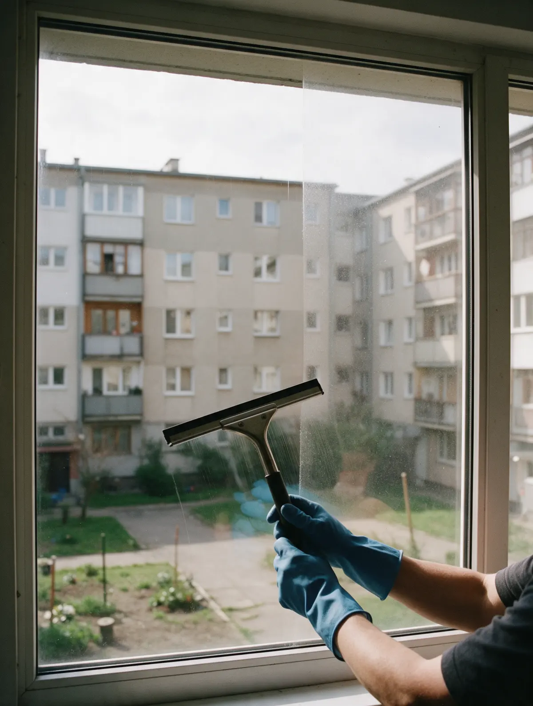

Клининг · химчистка · мытьё окон · Уфа
Уборка квартир и офисов в Уфе – приедем в удобное вам время
Генеральная и после ремонта, химчистка дивана, мытьё окон. Менеджер заранее согласует план и пришлёт чек-лист работ и прайс.
- Чек-лист работ и прайс – до приезда
- Менеджер сам проверяет результат
- Квартиры, офисы, клиники, рестораны

Что входит в уборку
Входит
- Чек-лист с перечнем работ и прайс – до приезда
- Клинеры привозят свои чистящие средства
- Кухня, санузел, комнаты – по списку работ
- Духовка, СВЧ, стиральная машина – по выбору
- Менеджер проверяет результат после уборки
Отдельно, если нужно
- Химчистка дивана и матраса
- Мытьё окон и балкона
- Чистка батарей, стирка и глажка штор
Уборка: ориентиры по цене
Цена за м² здесь – для примера: точную сумму называем после вопросов менеджера о задаче. Остальные услуги – по запросу.
За м² площади
- Поддерживающаяповерхности, сантехника, полы, мусор100 ₽ за м²
- Генеральнаякухня, санузел, комнаты, техника по выбору200 ₽ за м²
- После ремонтастроительная пыль и следы ремонта280 ₽ за м²
Отдельные услуги
- Химчистка диванана дому, документы предоставляемуточнить
- Мытьё окон и балконав том числе окна офисовуточнить
- Чистка батарей, стирка штори мойка вывесок – по запросууточнить
Химчистка матраса, уборка кухни и балкона – тоже отдельно, пришлите задачу в WhatsApp.
Цены для примера. В вашем сайте будут ваши.
Как проходит
- 01
Заявка
Пишете в WhatsApp, что нужно убрать и где: квартира, офис или заведение.
- 02
План
Менеджер уточняет задачу, подбирает дату и время, присылает чек-лист и прайс.
- 03
Приезд
Клинеры приезжают к назначенному часу со своими средствами.
- 04
Проверка
Менеджер проверяет, всё ли сделано, и закрывает заказ.



На что опираемся
Приезжаем вовремя
К назначенному часу, о чём в отзывах пишут чаще всего.
Список работ – заранее
Чек-лист и прайс приходят до приезда, без сюрпризов в день уборки.
Результат проверяет менеджер
Не оставляем клиента один на один с клинерами.
Не только квартиры
Окна офисов, клиника перед открытием, диваны в ресторане – с документами.
Отзывы из 2ГИС
«Молодцы ребята, люблю их звать потому что менеджер сам приходит, обсуждает план работы с клинерами и потом по окончанию сам приезжает и проверяет все ли сделали. Это очень круто 😍 спасибо большое вам за работу ❤️»
Гульнара Каюмова · 22 октября 2025
«Регулярно заказываем химчистку диванов в ресторане, ребята отличные, чистят хорошо, отзывчивые на доп просьбы, всю документацию предоставляют. Индивидуальный подход. Так же моют окна у нас. Вопросов к ним нет, спасибо🔥»
Таня Л · 10 ноября 2025
«Обращаемся уже во второй раз. В первый раз была уборка после ремонта, в этот раз химчистка дивана. В обоих случаях отличное впечатление и уборка отличная, а диван как новый.»
Юлия Ракзина · 20 октября 2025
Отзывы с карточки в 2ГИС, без правок.
Частые вопросы
Нужны ли наши средства?
Нет: клинеры привозят чистящие средства с собой.
Как узнать, что входит в генеральную уборку?
Менеджер присылает чек-лист с перечнем работ и прайс. К уборке можно добавить окна, балкон, технику.
Убираете ли вы офисы и заведения?
Да: по отзывам клиентов – клиника перед открытием, окна офиса, химчистка диванов в ресторане.
Что кроме уборки?
Химчистка дивана и матраса на дому, мытьё окон, чистка батарей, стирка и глажка штор, мойка вывесок.
Напишите, что нужно убрать – вернёмся с планом и датой
- Адрес
- Выезжаем по Уфе
- Часы
- Ежедневно с 09:00 до 20:00
- Телефон
- +7 987 015-85-85